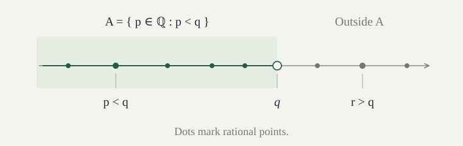

The natural numbers support addition and multiplication, but equations such as \(x+3=1\) and \(3x=1\) need new numbers. We will construct integers and rationals using quotient sets, then fill the gaps in the rational order using sets of rationals.
All constructions take place in ZF, without Choice. Write \([a,b]_{\mathbb Z}\) for an integer class and \([a,b]_{\mathbb Q}\) for a rational class. These are different equivalence relations on different sets. We identify old numbers with their images under the embeddings established below; the raw sets representing the numbers need not literally be nested.
On \(\omega\times\omega\), define
The pair describes the intended difference \(a-b\), but the definition uses only natural-number addition. It identifies \((1,3)\) with \((4,6)\), for example. Define \(\mathbb Z=(\omega\times\omega)/{\sim_{\mathbb Z}}\), once the relation is shown to be an equivalence.
The relation \(\sim_{\mathbb Z}\) is reflexive, symmetric, and transitive.
Proof
Reflexivity and symmetry follow from commutativity of addition and symmetry of equality. If \(a+d=c+b\) and \(c+f=e+d\), adding these equations gives \(a+d+c+f=c+b+e+d\). Cancelling \(c+d\) gives \(a+f=e+b\), which is transitivity. The cancellation and rearrangement laws were proved for natural-number addition. □
Every class is a subset of \(\omega\times\omega\), so Separation on its power set constructs the quotient. We do not have to choose a representative from every class.
Set \(0_{\mathbb Z}=[0,0]_{\mathbb Z}\), \(1_{\mathbb Z}=[1,0]_{\mathbb Z}\), and define
The multiplication formula records \((a-b)(c-d)=(ac+bd)-(ad+bc)\) without using subtraction on natural numbers. We must check that the resulting classes and comparison are independent of representatives.
The rules in define operations and an order on \(\mathbb Z\).
Proof
It suffices to change one representative at a time. Suppose \(a+b'=a'+b\). Adding \(c+d\) shows \((a+c)+(b'+d)=(a'+c)+(b+d)\), so the sums agree. The same equality, read in reverse order, shows \([b,a]_{\mathbb Z}=[b',a']_{\mathbb Z}\).
For multiplication, multiply the equality by \(c\) and by \(d\). It gives \(ac+b'c=a'c+bc\) and \(ad+b'd=a'd+bd\). Add the first equality to the reverse of the second and rearrange to obtain
which is exactly equivalence of the two product representatives. The formulas for addition and multiplication are symmetric in the two pairs, so changes to the other representative work too.
For order, adding \(b'\) to \(a+d\le c+b\), substituting \(a+b'=a'+b\), and cancelling \(b\) gives \(a'+d\le c+b'\), with every step reversible. Changing \((c,d)\) follows by the same argument. □
Every integer has a unique form \([k,0]_{\mathbb Z}\) with \(k\in\omega\), or \([0,k]_{\mathbb Z}\) with \(k\in\omega\setminus\{0\}\). The map \(n\mapsto[n,0]_{\mathbb Z}\) is injective and preserves addition, multiplication, zero, one, and order.
Proof
If \(b\le a\), the unique additive difference gives \(a=b+k\), so \([a,b]_{\mathbb Z}=[k,0]_{\mathbb Z}\). If \(a<b\), write \(b=a+k\) with \(k>0\); then \([a,b]_{\mathbb Z}=[0,k]_{\mathbb Z}\). Within each family equivalence is equality of magnitudes. Equality between \([k,0]\) and \([0,l]\) requires \(k+l=0\), so both magnitudes are zero; the second family excludes that case.
Injectivity of the embedding follows from \([m,0]=[n,0]\) iff \(m=n\). Substitution into the arithmetic and order formulas proves their preservation. □
Addition and multiplication on \(\mathbb Z\) are associative and commutative, with identities \(0\) and \(1\). Every integer has an additive inverse, and multiplication distributes over addition. The order is total, translation preserves and reflects it, and multiplication by a positive integer does the same. A product is zero only if a factor is zero.
Proof
Addition’s laws follow component by component from the natural-number laws. Swapping coordinates supplies an inverse: \([a,b]+[b,a]=[a+b,a+b]=[0,0]\). The multiplication identities follow by substitution, and commutativity follows by rearranging the products in each coordinate.
For associativity, multiplication of three pairs \((a,b),(c,d),(e,f)\), grouped either way, yields the class with coordinates
For distributivity, multiplying \((a,b)\) by the componentwise sum of \((c,d)\) and \((e,f)\) yields \((ac+ae+bd+bf,ad+af+bc+be)\), also the componentwise sum of the product representatives.
Totality and reflexivity follow from the order on natural numbers; equality of the cross sums is precisely equality of integer classes, giving antisymmetry. For transitivity, add \(a+d\le c+b\) and \(c+f\le e+d\), then cancel \(c+d\). Translation adds the same natural-number term \(e+f\) to both cross sums, so preserves and reflects order.
A positive integer is uniquely \([k,0]\) with \(k>0\). Products of two positive integers are positive by the corresponding natural-number fact. Distributivity and additive inverses give \((-x)y=-(xy)\) and \((-x)(-y)=xy\). The sign forms therefore imply that products of nonzero integers are nonzero. Finally, \(x<y\) is equivalent to \(y-x>0\); multiplying the positive difference by a positive integer proves strict order preservation. Totality gives reflection and the non-strict version. □
A commutative ring means a set with these additive, multiplicative, inverse, and distributive laws. Here \(0\ne1\). Absence of zero divisors also gives cancellation of any nonzero multiplicative factor: \(xy=xz\) implies \(x(y-z)=0\), hence \(y=z\) when \(x\ne0\).
On \(\mathbb Z\times(\mathbb Z\setminus\{0\})\), define
Define \(\mathbb Q\) as the quotient by this relation. Write \([a,b]_{\mathbb Q}\), or \(a/b\) after the construction is justified. The denominator is required to be nonzero. Thus \((1,2)\), \((2,4)\), and \((-1,-2)\) describe the same rational number.
The relation \(\sim_{\mathbb Q}\) is an equivalence relation.
Proof
Reflexivity and symmetry are immediate from equality and commutativity. If \(ad=cb\) and \(cf=ed\), then \(adf=cbf=edb\). Since \(d\ne0\), integer cancellation gives \(af=eb\). This proves transitivity. □
Use the following operations on rational classes:
Each class has a representative with positive denominator, obtained by negating both coordinates if necessary. For such representatives define \(a/b\le c/d\) iff \(ad\le cb\). These definitions make \(\mathbb Q\) an ordered field: an ordered commutative ring with \(0\ne1\) in which every nonzero element has a multiplicative inverse. The map \(a\mapsto[a,1]_{\mathbb Q}\) embeds \(\mathbb Z\), preserving arithmetic and order.
Proof
Products of nonzero denominators remain nonzero. To check independence of representatives, change \((a,b)\) to \((a',b')\) with \(ab'=a'b\). For addition, the cross products are
The product cross equality is \(acb'd=a'cbd\). Negation preserves the cross equality, as does swapping the coordinates for inversion. A fraction is zero exactly when its numerator is zero, so inversion applies to every nonzero class and gives product \([ab,ba]=[1,1]\). Changing the other representative is handled by symmetry.
For positive denominators, multiplication of an inequality by \(b'>0\), use of \(ab'=a'b\), and cancellation of \(b>0\) show that \(ad\le cb\) iff \(a'd\le cb'\). The other representative is handled in the same way. Thus order is well-defined.
Any finite list of fractions can be written over a common positive denominator: use the product of their positive denominators, multiplying each numerator by the other factors. Addition, equality, and comparison then reduce to the corresponding integer facts. Associativity, commutativity, and distributivity for the fraction formulas follow by cross multiplication from the ring laws for integers. Positive fractions have positive numerators in this normalization, so positive products are positive and the order is compatible with multiplication. Finally, \([a,1]=[c,1]\) iff \(a=c\); the formulas immediately give preservation by the embedding. □
What goes wrong if the rational relation is defined on all of \(\mathbb Z\times\mathbb Z\), including \((0,0)\)?
Every pair is related to \((0,0)\), since both cross products vanish. But \((0,1)\) is not related to \((1,1)\). Thus transitivity fails: \((0,1)\sim(0,0)\sim(1,1)\) without \((0,1)\sim(1,1)\). The nonzero-denominator hypothesis is needed even to obtain a quotient by an equivalence relation.
Between any two distinct rationals there is another rational. Every rational is bounded above by a natural number. For every rational \(\varepsilon>0\), some positive natural number \(n\) satisfies \(1/n<\varepsilon\).
Proof
If \(p<q\), their midpoint lies strictly between them. Write a rational as \(a/b\) with positive integer \(b\). Since \(b\ge1\), the natural number \(|a|+1\) exceeds \(a/b\); here \(|a|\) is its natural-number magnitude. If \(\varepsilon=a/b>0\), then \(a,b\) are positive integers; taking the natural number \(n=b+1\) gives \(1/n<1/b\le a/b\). □
These facts concern the constructed rational field. They do not use real numbers or their completeness.
A Dedekind cut is a subset \(A\subseteq\mathbb Q\) which is nonempty and proper, is downward closed, and has no greatest member. In symbols,
Define \(\mathbb R\) to be the set of all these cuts, obtained by Separation from \(\mathcal P(\mathbb Q)\). For \(q\in\mathbb Q\), let \(\iota(q)=\{p\in\mathbb Q:p<q\}\). Density shows that \(\iota(q)\) is a cut. Its boundary rational \(q\) is excluded, keeping the no-greatest-member convention uniform.
We order cuts by inclusion: \(A\le B\) means \(A\subseteq B\), and \(A<B\) means proper inclusion. A real number in this construction is a set of rationals, not an assumed point used to define that set.

Inclusion totally orders \(\mathbb R\). The map \(\iota:\mathbb Q\to\mathbb R\) preserves and reflects order and is injective. If \(q\in A\), then \(\iota(q)<A\); if \(q\notin A\), then \(A\le\iota(q)\).
Proof
If \(A\not\subseteq B\), take \(a\in A\setminus B\). Every \(b\in B\) is below \(a\): equality is excluded, and \(a<b\) would put \(a\) in \(B\). Downward closure then gives \(B\subseteq A\). Inclusion already has the other partial-order properties.
If \(p<q\), then \(\iota(p)\subsetneq\iota(q)\), with \(p\) witnessing strictness. Totality gives reflection and injectivity. If \(q\in A\), downward closure gives \(\iota(q)\subseteq A\), and \(q\) witnesses strictness. If \(q\notin A\), every member of \(A\) is strictly below \(q\), so \(A\subseteq\iota(q)\). □
If \(\mathcal A\subseteq\mathbb R\) is nonempty and has an upper bound in \(\mathbb R\), then
Proof
The union is nonempty because some member cut is nonempty. It is proper because it is contained in an upper-bound cut, itself a proper subset of \(\mathbb Q\). Downward closure holds because a member of the union lies in a downward-closed cut. The same observation supplies a larger member, so the union has no greatest member. Thus it is a cut.
It contains every member of \(\mathcal A\), and every upper bound contains their union. Hence it is the least upper bound. □
This is Dedekind completeness. The hypotheses cannot be dropped: the empty union is not a cut, and the union of all rational cuts is \(\mathbb Q\), also not a cut.
For a cut \(A\) and rational \(\varepsilon>0\), there are \(a\in A\) and \(b\notin A\) with \(0<b-a<\varepsilon\). Rational cuts are also order-dense: if \(A<B\), then some \(q\) satisfies \(A<\iota(q)<B\).
Proof
Put \(\delta=\varepsilon/2\). Consider the integers \(k\) with \(k\delta\notin A\). This collection is nonempty and bounded below: choose a rational outside \(A\) and a rational inside it, then use natural-number bounds on their quotients by \(\delta\). An integer set bounded below has a least member, by translating it to a subset of \(\omega\) and using its well-order. For that least \(k\), \(a=(k-1)\delta\) belongs to \(A\), while \(b=k\delta\) does not. Their gap is \(\delta<\varepsilon\).
For density, take \(r\in B\setminus A\), then \(s\in B\) with \(s>r\), and choose rational \(q\) between \(r,s\). We have \(A\le\iota(r)<\iota(q)<B\). □
Write \(0_{\mathbb R}=\iota(0)\) and \(1_{\mathbb R}=\iota(1)\). For cuts \(A,B\), define
The strict inequality in negation excludes a possible rational boundary. For example, \(-\iota(q)=\iota(-q)\), including when \(q=0\).
The operations above produce cuts. Addition is associative and commutative, zero is an identity, and \(-A\) is an additive inverse. Translation preserves and reflects order, and \(\iota(p+q)=\iota(p)+\iota(q)\).
Proof
For \(A+B\), choose members to prove nonemptiness and rational upper bounds \(u\notin A,v\notin B\) to bound every sum strictly below \(u+v\). If \(t<a+b\), then \(t-a<b\), so \(t=a+(t-a)\in A+B\). Increasing \(a\) inside \(A\) shows there is no maximum. Thus the sum is a cut.
For \(-A\), any \(u\notin A\) supplies members below \(-u\). If \(a\in A\), then every \(u\notin A\) is greater than \(a\), so every member of \(-A\) is below \(-a\). Downward closure is immediate, and a midpoint between \(t\) and a witnessing \(-u\) supplies a larger member. Thus negation also gives a cut.
Associativity and commutativity of addition follow from the description as sums of rational members. For \(A+\iota(0)=A\), one inclusion is downward closure. For the other, given \(a\in A\), choose \(a'\in A\) greater than \(a\); then \(a=(a-a')+a'\), with \(a-a'<0\).
Every member \(a+t\) of \(A+(-A)\) is negative, since \(t<-u\) for some \(u\notin A\) and \(a<u\). Conversely, for rational \(r<0\), take a bracket \(a\in A,u\notin A\) with \(u-a<-r\). Then \(r-a<-u\), so \(r=a+(r-a)\in A+(-A)\). Therefore \(A+(-A)=\iota(0)\).
Inclusion is preserved when adding the same cut; adding its inverse proves reflection. Finally, sums of rationals below \(p,q\) lie below \(p+q\). If \(t<p+q\), let \(h=(p+q-t)/2>0\); then \(t=(p-h)+(q-h)\). This proves the embedding identity. □
For \(A,B\ge0_{\mathbb R}\), define
This also handles zero: if either cut is \(\iota(0)\), there are no positive witnesses, so the product is exactly \(\iota(0)\). For arbitrary cuts, write \(|A|=A\) when \(A\ge0\), and \(|A|=-A\) otherwise. Set \(AB=0\) if either factor is zero. For nonzero factors, set \(AB=|A|\odot|B|\) when their signs agree, and \(AB=-(|A|\odot|B|)\) otherwise.
These clauses cover positive, negative, and zero factors separately, including zero times a negative cut.
Multiplication produces cuts, agrees with rational multiplication, and is monotone in each nonnegative factor. More generally, if
for rational \(\varepsilon>0\), then \(AB\) lies between the rational cuts at \(pq-E\) and \(pq+E\), where \(E=\varepsilon(|p|+|q|)+\varepsilon^2\).
Proof
For nonnegative products, negative rationals give nonemptiness. Choose positive rational upper bounds \(u\notin A,v\notin B\); each witness product is below \(uv\), giving properness. The definition gives downward closure. A negative member can be increased toward zero; a nonnegative member \(t<ab\) can be increased toward its witnessing \(ab\). Thus there is no greatest member. Negation then handles the other signs.
Increasing either nonnegative factor increases the set of witnesses, proving monotonicity. For positive rationals \(p,q\), all witnesses for \(\iota(p)\odot\iota(q)\) are below \(pq\). Conversely, if \(0\le t<pq\), choose a sufficiently small positive rational \(h<\min(p,q)\) with \(h(p+q)<pq-t\). Then \((p-h)(q-h)>t\), providing witnesses. Zero and the sign clauses prove \(\iota(pq)=\iota(p)\iota(q)\) for all rationals.
For general intervals, split each interval at zero if it crosses zero. Nonnegative monotonicity and order reversal by negation bound each sign case by the minimum and maximum of the four rational endpoint products. Every endpoint product has the form \((p+s)(q+t)\), with \(s,t\in\{-\varepsilon,\varepsilon\}\), and differs from \(pq\) by at most \(\varepsilon(|p|+|q|)+\varepsilon^2\). If an interval crosses zero, the additional endpoint products involving zero satisfy the same bound, since the corresponding \(|p|\) or \(|q|\) is at most \(\varepsilon\). This proves the asserted bracket. □
Cut multiplication is associative and commutative, has identity \(\iota(1)\), and distributes over addition. Thus the cuts, with the operations defined above, form a commutative ring with \(0\ne1\). Products of positive cuts are positive, so its total order is compatible with multiplication.
Proof
We first justify the approximation argument used for the identities. For any finite list of cuts and any rational \(0<\delta\le1\), gives rational approximations to within \(\delta\) on both sides. Their magnitudes have a common rational bound independent of \(\delta\): take fixed bounds for the cuts and enlarge them by one.
For addition, two errors bounded by \(r\) and \(s\) give an error bounded by \(r+s\), by translation of inequalities. Negation preserves an error bound. For multiplication, the preceding bracket argument with possibly different errors gives the bound \(|p|s+|q|r+rs\). Consequently induction on any fixed expression built from addition, negation, and multiplication gives an error at most \(C\delta\), where \(C\) is a positive rational depending on the expression and the fixed bounds, but not on \(\delta\). At a product step, the rational intermediate expressions have fixed bounds too; since \(\delta\le1\), the \(\delta^2\) term is absorbed into \(C\delta\).
Apply this to both sides of each claimed ring identity, using the same rational approximations for their variables. The rational expressions are equal, because the identities hold in \(\mathbb Q\). The two cut expressions are therefore within \(C\delta\) of each other for every positive rational \(\delta\le1\), after enlarging \(C\) to cover both errors.
They must be equal. Indeed, if \(X<Y\), choose \(r\in Y\setminus X\) and \(s\in Y\) with \(s>r\). Then \(X\le\iota(r)\) and \(\iota(s)<Y\), so \(Y-X>\iota(s-r)\). Choosing \(\delta\) with \(C\delta<s-r\) contradicts the error bound. This proves all the asserted identities, including the multiplicative identity, without assuming limits or real completeness in the argument.
If \(A,B>0\), both contain positive rationals \(a,b\), and their product contains a positive rational below \(ab\); hence \(AB>0\). Together with distributivity, this gives order compatibility, using the positive difference between two ordered cuts as for the integers. Finally, \(\iota(0)\ne\iota(1)\) by injectivity of the rational embedding. □
For \(A>0\), define
This is a positive cut with \(AA^{-1}=\iota(1)\). For \(A<0\), define \(A^{-1}=-((-A)^{-1})\). Thus \(\mathbb R\) is a Dedekind-complete ordered field.
Proof
Choose \(a_0>0\) in \(A\). Every positive \(u\notin A\) is greater than \(a_0\), so members of the proposed inverse are bounded above by \(1/a_0\). There exists such a positive \(u\), by taking a positive rational upper bound of \(A\); it supplies positive members of the inverse. Downward closure and absence of a maximum follow from the strict witness inequality, as for multiplication. Thus the inverse is a positive cut.
If \(a>0\) lies in \(A\) and \(b>0\) lies in \(A^{-1}\), choose a witnessing \(u\notin A\) with \(b<1/u\). Since \(a<u\), we have \(ab<1\). Therefore \(AA^{-1}\subseteq\iota(1)\).
For rational \(0\le t<1\), choose \(a\in A,u\notin A\) with \(u-a<(1-t)a_0\). We may replace \(a\) by \(\max(a,a_0)\), keeping it in \(A\) and only shrinking the gap. Then \(u>a\ge a_0\), so \(u-a<(1-t)u\), giving \(a/u>t\). Choose a positive rational \(b\) strictly between \(t/a\) and \(1/u\). It belongs to \(A^{-1}\) and \(ab>t\), so \(t\in AA^{-1}\). Negative \(t\) already belong by definition. This gives the reverse inclusion. The sign laws give the inverse for negative cuts as well. Completeness was proved in . □
Consider \(D=\{q\in\mathbb Q:q<0\ \text{or}\ q^2<2\}\). Show that it is a cut and is not \(\iota(r)\) for any rational \(r\).
The set contains zero and excludes two. It is downward closed: negative rationals are included, and squaring preserves order among nonnegative rationals. If \(q<0\), zero is a larger member. If \(q\ge0\) and \(q^2<2\), put \(s=(2q+2)/(q+2)\). Then \(s-q=(2-q^2)/(q+2)>0\) and \(2-s^2=2(2-q^2)/(q+2)^2>0\). Thus there is no maximum, and \(D\) is a cut.
If \(D=\iota(r)\), then \(r>0\), since zero belongs to \(D\). If \(r^2<2\), the same formula produces a member of \(D\) above \(r\), impossible. If \(r^2>2\), choose rational \(0<h<\min(r,(r^2-2)/(2r))\). Then \(r-h>0\) and \((r-h)^2>2\), although \(r-h\in\iota(r)\), also impossible. Hence \(r^2=2\).
No rational has that square: write a positive candidate as \(m/n\) with positive natural numbers and choose a representation having least possible denominator. The equality \(m^2=2n^2\) forces \(m\) even, since an odd square is odd. Writing \(m=2k\) then forces \(n\) even, so both can be divided by two, contradicting leastness. Every natural number is even or odd by induction. The cut \(D\) is consequently a new positive real number, conventionally denoted \(\sqrt2\).
Every Dedekind-complete ordered field \(K\) is isomorphic to the cut field by a unique order-preserving field isomorphism fixing the rational numbers.
Proof
An ordered field contains a canonical copy of \(\mathbb Q\): repeated addition of one gives the integers, and inversion gives their fractions. It is Archimedean. Otherwise the natural numbers would have a least upper bound \(u\); some natural number would exceed \(u-1\), making its successor exceed \(u\), a contradiction. This also proves rational density in \(K\): for \(x<y\), choose a positive integer \(n\) with \(n(y-x)>1\), then the least integer \(m>nx\); it gives \(x<m/n<y\).
Map \(x\in K\) to \(A_x=\{q\in\mathbb Q:q<x\}\). Archimedeanness and density make this a cut. Density makes the map order-preserving and injective. For any cut \(A\), take \(x=\sup_K A\), using a rational upper bound. If \(q\in A\), some \(r\in A\) is greater than \(q\), so \(q<x\). If \(q<x\), then \(q\) is not an upper bound of \(A\), so some \(r\in A\) exceeds it and downward closure gives \(q\in A\). Thus \(A_x=A\), proving surjectivity.
Rational brackets of arbitrarily small width are available in \(K\) by Archimedeanness. Addition and multiplication satisfy the same bracket estimates as the cuts, so the comparison argument in proves preservation of both operations. An order isomorphism fixing rationals must send \(x\) to its rational lower cut, so is unique. □
We can therefore use the familiar symbols \(\mathbb N,\mathbb Z,\mathbb Q,\mathbb R\) after making the canonical identifications. Their arithmetic structure is the point of the constructions; the particular sets used to represent their elements are a choice of realization.